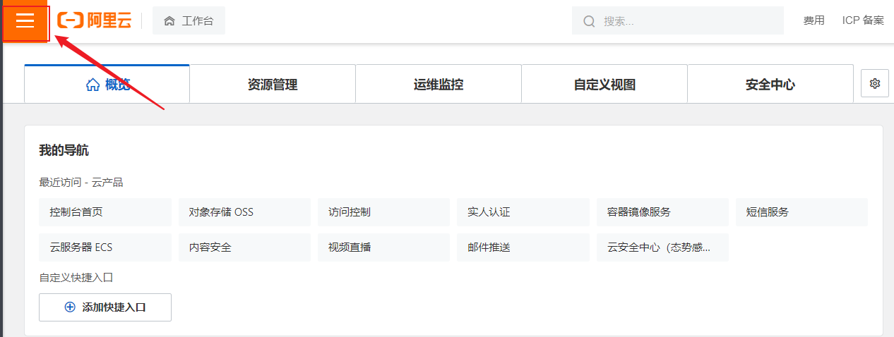
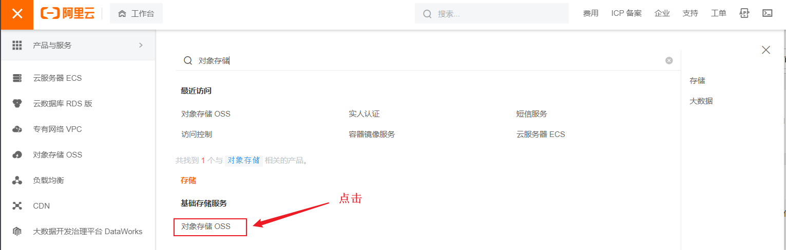
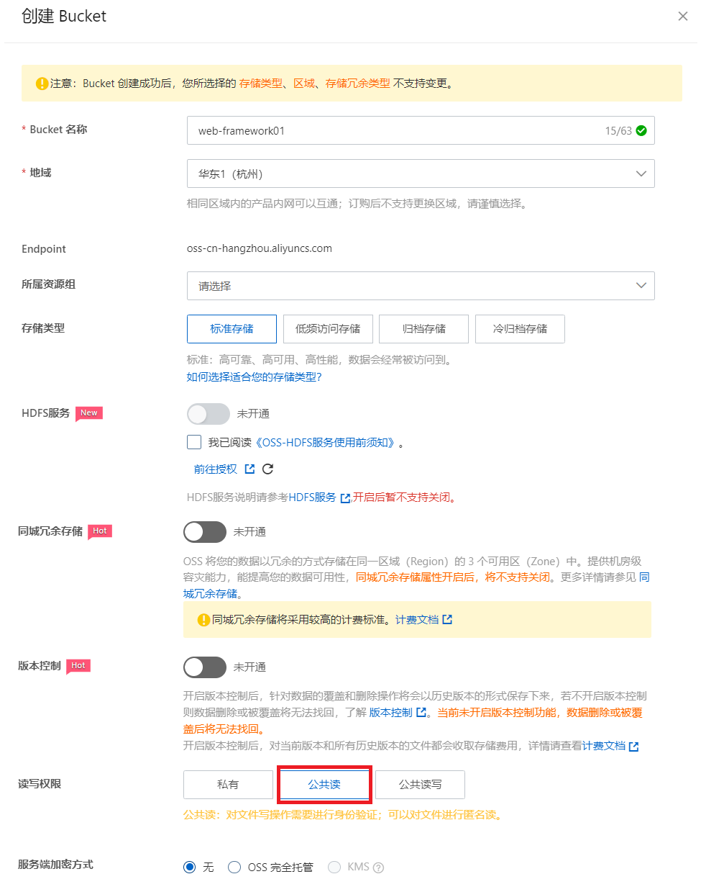

云存储解决方案-阿里云OSS
1. 阿里云OSS简介
阿里云对象存储服务（Object Storage Service，简称OSS）为您提供基于网络的数据存取服务。使用OSS，您可以通过网络随时存储和调用包括文本、图片、音频和视频等在内的各种非结构化数据文件。
阿里云OSS将数据文件以对象（object）的形式上传到存储空间（bucket）中。
您可以进行以下操作：
- 创建一个或者多个存储空间，向每个存储空间中添加一个或多个文件。
- 通过获取已上传文件的地址进行文件的分享和下载。
- 通过修改存储空间或文件的属性或元信息来设置相应的访问权限。
- 在阿里云管理控制台执行基本和高级OSS任务。
- 使用阿里云开发工具包或直接在应用程序中进行RESTful API调用执行基本和高级OSS任务
2. OSS开通
（1）打开https://www.aliyun.com/ ，申请阿里云账号并完成实名认证。

（2）充值 (可以不用做)
（3）开通OSS
登录阿里云官网。 点击右上角的控制台。

将鼠标移至产品，找到并单击对象存储OSS，打开OSS产品详情页面。在OSS产品详情页中的单击立即开通。



开通服务后，在OSS产品详情页面单击管理控制台直接进入OSS管理控制台界面。您也可以单击位于官网首页右上方菜单栏的控制台，进入阿里云管理控制台首页，然后单击左侧的对象存储OSS菜单进入OSS管理控制台界面。

（4）创建存储空间
新建Bucket，命名为 hmleadnews ，读写权限为 ==公共读==

3. OSS快速入门
参考文档官方
（1）创建测试工程，引入依赖
1
2
3
4
5
|
<dependency>
<groupId>com.aliyun.oss</groupId>
<artifactId>aliyun-sdk-oss</artifactId>
<version>3.15.1</version>
</dependency>
|
（2）新建类和main方法
1
2
3
4
5
6
7
8
9
10
11
12
13
14
15
16
17
18
19
20
21
22
23
24
25
26
27
28
29
30
31
32
33
34
35
36
37
38
39
40
41
42
43
44
45
46
47
48
49
50
51
|
import org.junit.jupiter.api.Test;
import com.aliyun.oss.ClientException;
import com.aliyun.oss.OSS;
import com.aliyun.oss.OSSClientBuilder;
import com.aliyun.oss.OSSException;
import java.io.FileInputStream;
import java.io.InputStream;
public class AliOssTest {
@Test
public void testOss(){
// Endpoint以华东1（杭州）为例，其它Region请按实际情况填写。
String endpoint = "https://oss-cn-hangzhou.aliyuncs.com";
// 阿里云账号AccessKey拥有所有API的访问权限，风险很高。强烈建议您创建并使用RAM用户进行API访问或日常运维，请登录RAM控制台创建RAM用户。
String accessKeyId = "---------------------";
String accessKeySecret = "-----------------------";
// 填写Bucket名称，例如examplebucket。
String bucketName = "-----------";
// 填写Object完整路径，完整路径中不能包含Bucket名称，例如exampledir/exampleobject.txt。
String objectName = "0001.jpg";
// 填写本地文件的完整路径，例如D:\\localpath\\examplefile.txt。
// 如果未指定本地路径，则默认从示例程序所属项目对应本地路径中上传文件流。
String filePath= "C:\\Users\\Administrator\\Pictures\\Saved Pictures\\10.jpg";
// 创建OSSClient实例。
OSS ossClient = new OSSClientBuilder().build(endpoint, accessKeyId, accessKeySecret);
try {
InputStream inputStream = new FileInputStream(filePath);
// 创建PutObject请求。
ossClient.putObject(bucketName, objectName, inputStream);
} catch (OSSException oe) {
System.out.println("Caught an OSSException, which means your request made it to OSS, "
+ "but was rejected with an error response for some reason.");
System.out.println("Error Message:" + oe.getErrorMessage());
System.out.println("Error Code:" + oe.getErrorCode());
System.out.println("Request ID:" + oe.getRequestId());
System.out.println("Host ID:" + oe.getHostId());
} catch (Exception ce) {
System.out.println("Caught an ClientException, which means the client encountered "
+ "a serious internal problem while trying to communicate with OSS, "
+ "such as not being able to access the network.");
System.out.println("Error Message:" + ce.getMessage());
} finally {
if (ossClient != null) {
ossClient.shutdown();
}
}
}
}
|
4. 获取AccessKeyId

附件：AliOSSUtils.java
1
2
3
4
5
6
7
8
9
10
11
12
13
14
15
16
17
18
19
20
21
22
23
24
25
26
27
28
29
30
31
32
33
34
35
36
37
38
39
40
41
|
package com.itheima.utils;
import com.aliyun.oss.OSS;
import com.aliyun.oss.OSSClientBuilder;
import org.springframework.web.multipart.MultipartFile;
import java.io.*;
import java.util.UUID;
/**
* 阿里云 OSS 工具类
*/
public class AliOSSUtils {
private String endpoint = "https://oss-cn-hangzhou.aliyuncs.com";
private String accessKeyId = "LTAI4GCH1vX6DKqJWxd6nEuW";
private String accessKeySecret = "yBshYweHOpqDuhCArrVHwIiBKpyqSL";
private String bucketName = "web-tlias";
/**
* 实现上传图片到OSS
*/
public String upload(MultipartFile file) throws IOException {
// 获取上传的文件的输入流
InputStream inputStream = file.getInputStream();
// 避免文件覆盖
String originalFilename = file.getOriginalFilename();
String fileName = UUID.randomUUID().toString() + originalFilename.substring(originalFilename.lastIndexOf("."));
//上传文件到 OSS
OSS ossClient = new OSSClientBuilder().build(endpoint, accessKeyId, accessKeySecret);
ossClient.putObject(bucketName, fileName, inputStream);
//文件访问路径
String url = endpoint.split("//")[0] + "//" + bucketName + "." + endpoint.split("//")[1] + "/" + fileName;
// 关闭ossClient
ossClient.shutdown();
return url;// 把上传到oss的路径返回
}
}
|